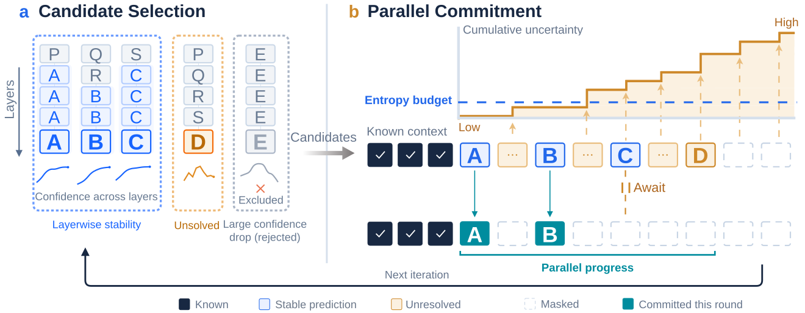

RPD · arXiv 2026
Reliable Parallel Decoding
in Masked Diffusion Language Models
Department of Computer Science, University of Virginia
Commit stable predictions together.
Don’t decode past too much uncertainty.
Real decoding trajectories
Loading example…
Loading recorded trajectories…
Download this replay as a GIF ↓

Abstract
Masked diffusion language models (MDLMs) can generate text efficiently by predicting multiple masked tokens in parallel, but predictions from the same forward pass are not necessarily reliable when committed together. We study when parallel commitment is reliable. Our diagnostics show that confidence alone does not determine a reliable commitment order: confident predictions near the end of the sequence can fix an answer before its supporting computations are established, and downstream predictions become less reliable as the uncertainty of their upstream context grows. At the same time, a single forward pass can already resolve several masked tokens, and predictions that remain stable across the final layers are more likely to be correct.
Based on these findings, we propose Reliable Parallel Decoding (RPD), a training-free method that selects candidates by layerwise prediction stability and final confidence, and commits them under a cumulative entropy budget over their preceding masked positions. RPD defers predictions with uncertain upstream context while committing the remaining candidates in parallel, without relying on a fixed block schedule. Across mathematical reasoning and code generation benchmarks on LLaDA and Dream, RPD achieves the highest decoding throughput among the evaluated methods while maintaining or improving accuracy.
The idea
Reliable predictions need ready context
Two complementary signals decide what to commit in parallel.

Look beyond final confidence
Check whether the predicted token persists across the final layers and whether its probability drops. Very high-confidence predictions bypass the stability test.
Account for unresolved context
Scan candidates from left to right and track the entropy of earlier positions that will remain masked. Commit candidates within the budget, wherever they lie on the canvas.
RPD-block uses the same stability-based selection within fixed 32-token blocks, without the cumulative entropy budget. We report it separately from full-canvas RPD.
Speed with answer quality in view
| Method | pass@1 (%) ↑ | NFE ↓ | Tokens/s ↑ | Throughput vs. default |
|---|---|---|---|---|
| Default | 39.60 | 256.00 | 5.93 | 1.00× |
| Fast-dLLM | 40.20 | 44.73 | 33.13 | 5.59× |
| EB-Sampler | 39.20 | 53.26 | 26.96 | 4.55× |
| LoPA | 39.40 | 23.94 | 21.58 | 3.64× |
| DAPD | 37.80 | 47.16 | 28.62 | 4.83× |
| RPD-block | 38.60 | 40.61 | 33.91 | 5.72× |
| RPD | 40.60 | 38.16 | 35.92 | 6.06× |
On LLaDA MBPP, full RPD reaches 6.06× the throughput of default decoding, with pass@1 increasing from 39.60% to 40.60%.
Citation
@misc{he2026reliableparallel,
title={Reliable Parallel Decoding in Masked Diffusion Language Models},
author={Zhenghao He and Bohan Liu and Guangzhi Xiong and Aidong Zhang},
year={2026},
eprint={2609.36452},
archivePrefix={arXiv},
primaryClass={cs.CL},
url={https://arxiv.org/abs/2609.36452}
}